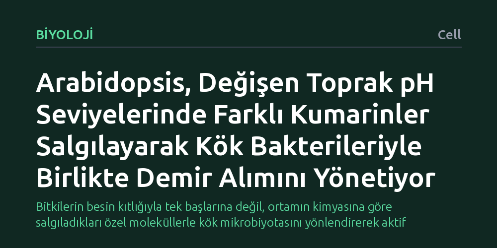

BIYOLOJI · Cell · 2026-10-13
Çalışma, Arabidopsis bitkisinin farklı toprak asitliği seviyelerinde demir ihtiyacını kök bakterileriyle nasıl karşıladığını inceledi. Bitkinin değişen pH değerlerine göre farklı kumarinler salgılayarak nötr koşullarda şelatlama, asidik koşullarda ise indirgeme yoluyla bakterilerden demir sağladığı belirlendi.
Bitkilerin besin kıtlığıyla tek başlarına değil, ortamın kimyasına göre salgıladıkları özel moleküllerle kök mikrobiyotasını yönlendirerek aktif biçimde başa çıktığını kanıtlıyor.

Toprakta demir elementi kimyasal olarak bol miktarda bulunsa da çoğu zaman bitkilerin kökleriyle doğrudan emebileceği formda değildir. Özellikle toprağın asitlik derecesi (pH) değiştikçe demirin çözünürlüğü belirgin biçimde farklılaşır; nötre yakın veya alkali ortamlarda demir hızla çökelerek bitki için erişilemez bir mineral haline gelirken, asidik ortamlarda da farklı kimyasal engeller ortaya çıkar. Bitkilerin bu değişken koşullarda kök çevrelerindeki mikroorganizmalarla nasıl bir bağ kurarak demir temin ettiği temel bir araştırma konusuydu.
Model bitki olarak yaygın kullanılan Arabidopsis (farekulağı teresi), köklerinden çevreye ikincil metabolitler salgılayarak demiri çözündürmeye çalışır. Ancak bitkinin tek bir kimyasal stratejiye mi bağlı kaldığı, yoksa değişen toprak kimyasına göre kök mikrobiyotasıyla koordineli biçimde farklı biyokimyasal yollar mı geliştirdiği tam olarak bilinmiyordu.
Araştırmacılar bu soruyu aydınlatmak amacıyla, Arabidopsis bitkisinin farklı çevresel pH seviyelerinde köklerinden dışarı salgıladığı özel metabolit profillerini laboratuvar ortamında kontrollü deneylerle takip etti. Kök salgılarında yer alan farklı kumarin kimyasal türleri (kemotipleri) ayrıştırılarak bitkinin asitlik derecesine göre hangi bileşikleri devreye soktuğu analiz edildi.
Ardından ekip, bu kumarin moleküllerinin kök çevresinde yaşayan bakterilerle olan etkileşimini mercek altına aldı. Deneylerde bakterilerin demir bağlayıcı şelatör molekülleri olan sideroforları üretme süreçleri ile bakteriyel redoks (indirgenme-yükseltgenme) algılama sistemlerinin demir hareketliliğine etkisi incelendi.
Araştırmanın temel bulgusu, Arabidopsis bitkisinin sabit tek bir kimyasal üretmek yerine, toprağın pH derecesine bağlı olarak farklı kumarin kemotipleri salgıladığını ortaya koydu. Bitki, çevresel asitliğe göre kök mikrobiyotasına yönelik adeta farklı kimyasal talimatlar iletmektedir.
Nötre yakın pH koşullarında salgılanan kumarinler, kök bakterilerini harekete geçirerek siderofor bağımlı demir şelatlamasını tetikliyor ve demirin kıskaçlanarak çözünmesini sağlıyor. Buna karşılık, asidik pH koşullarında salgılanan farklı kumarin türleri, bakterilerin redoks algılama mekanizmasını devreye sokarak demirin indirgenme yoluyla emilebilir hale gelmesine öncülük ediyor.
Elde edilen sonuçlar, bitkilerin besin alımında pasif birer alıcı olmadığını, tam tersine kök çevrelerindeki mikrobiyal ortaklarını ortam koşullarına göre aktif biçimde yönlendiren kimyasal yöneticiler olduğunu gösteriyor. Bitki, topraktaki demiri tek başına çözmek yerine, mikrobiyotanın farklı biyokimyasal yeteneklerini çevre şartına göre akıllıca devreye sokmaktadır.
Bu mekanizmanın aydınlatılması, kireçli veya aşırı asidik topraklarda yaşanan demir eksikliği sorununa karşı kimyasal gübrelere bağımlılığı azaltabilecek mikrobiyal biyogübre stratejilerine zemin hazırlayabilir.